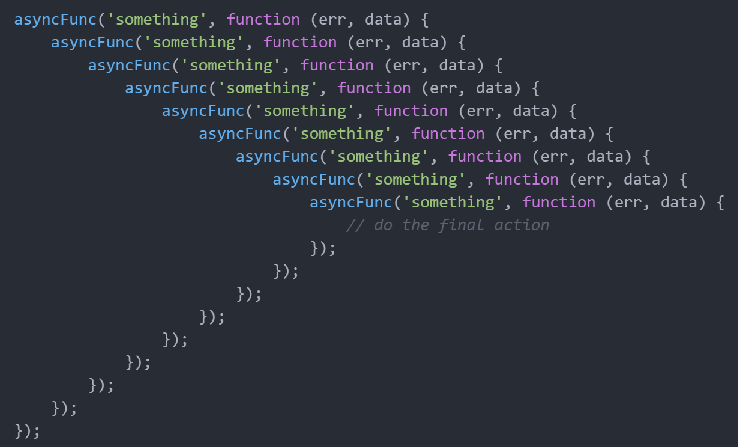

Aszinkron programozás JavaScriptben
Ebben a jegyzetben meghatározzuk a szinkron, illetve az aszinkron programkód fogalmát, majd ezután megnézzük, hogy a JavaScript milyen lehetőségeket biztosít aszinkron adatok feldolgozására. Részletesen áttekintjük a callback függvényeket, a Promise-okat, illetve az async és await kulcsszavak használatát.
1. Szinkron és aszinkron kódrészek
A programjainkban a szinkron kódrészek esetén az egyes utasítások sorban, egymás után hajtódnak végre. Tehát ebben az esetben először mindig megvárjuk, hogy az aktuális utasításunk végrehajtása befejeződjön, még mielőtt rátérnénk a következő utasítás végrehajtására.
Példa: Ha a JavaScript kódunkban több console.log() szerepel egymás után, akkor ezek szinkron módon kerülnek végrehajtásra: mindig megvárjuk az aktuális kiíratás végrehajtását, még mielőtt rátérnénk a következő kiíratásra.
console.log("Első kiíratás"); console.log("Második kiíratás"); console.log("Harmadik kiíratás");

Ezzel szemben az aszinkron kódrészek esetén az egyes utasítások egymástól függetlenül hajtódnak végre. Tehát itt nem várjuk meg, amíg az egyes utasítások végrehajtása befejeződik, hanem egyszerre hajtunk végre több, egymástól független utasítást ("multitasking").
JavaScriptben a setTimeout() függvény egy tipikus példája az aszinkron utasításoknak. Ezzel a függvénnyel egy megadott hosszúságú "szünetet" rakhatunk a programunkba. Miután ez a "szünet" letelt, végrehajtunk egy utasítássorozatot (amit egy callback függvényként adunk meg).
Példa: Mivel a setTimeout() aszinkron módon működik, ezért az alábbi példában az utolsó console.log() nem fogja megvárni, amíg a setTimeout() a 2 másodperces "szünet" után kiíratja a "Hosszabb ideig tartó kiíratás" szöveget, hanem még ezelőtt lefut.
console.log("Rövid ideig tartó kiíratás"); // 2 másodperc (2000 milliszekundum) "szünet" után kiíratunk valamit a konzolra setTimeout(() => console.log("Hosszabb ideig tartó kiíratás"), 2000); console.log("Egy másik rövid ideig tartó kiíratás");

Megjegyzés: A
setTimeout()akkor is később futna le, mint a szinkron kódrészünk, ha 0 másodperc hosszú lenne a kódba berakott "szünet".
Az aszinkron programozás egyik fő motivációja a felhasználói élmény (user experience) javítása. Ha például van egy webes alkalmazásunk, amely valamilyen adatlekérést végez (pl. egy szervertől kér le adatokat), akkor az adatlekérés aszinkron módon történő kezelésével elérhetjük, hogy a felhasználó továbbra is gond nélkül használhassa az alkalmazásunkat, amíg az adatlekérés fut a háttérben (így nem "fagy le" az alkalmazás az adat megérkezéséig).
2. Aszinkron JavaScript
Ebben a fejezetben egy példán keresztül nézzük meg, hogy hogyan lehet JavaScript segítségével aszinkron módon adatot lekérdezni egy webszervertől.
A webes szolgáltatás, amit használni fogunk a példáinkban a https://jsonplaceholder.typicode.com/. Ennek az úgynevezett API-nak a segítségével különféle, JSON formátumú mintaadatok (pl. felhasználók, felhasználók posztjai, a posztokra érkező kommentek stb.) iránt indíthatunk HTTP kéréseket.
Ha valaki számára az imént említett fogalmak (HTTP üzenet, API, JSON formátum) ismeretlenek lennének, akkor a 2.1. és 2.2. fejezetekben ezek röviden bemutatásra kerülnek.
2.1. HTTP üzenetek, API-k
Ha az alkalmazásunkban szeretnénk egy webszervertől elkérni valamilyen erőforrást (pl. egy képet, egy HTML fájlt, JSON formátumú adatot stb.), akkor a böngészőnkkel egy HTTP kérést indítunk a szerver felé az adott erőforrás iránt.
A szerver a megkapott HTTP kérést feldolgozza, és arra egy HTTP választ küld vissza. Amennyiben "minden rendben volt", akkor a szerver visszaküldi a böngészőnknek a kért erőforrást a válaszüzenetben. Ekkor a HTTP válaszban szereplő státuszkód a 200 OK. Ha valamilyen hiba történt a kliens-szerver kommunikáció során, akkor a HTTP válaszban egy 200 OK-tól eltérő státuszkód szerepel (pl. 404 Not Found, ha a kért erőforrás nem található a szerveren).
A két leggyakoribb HTTP kérés típus:
- A
GET-kérések segítségével jellemzően egy erőforrást kérünk el a szervertől (ebben a jegyzetben csak ilyen típusú HTTP kérésekre fogunk példát nézni). - A
POST-kérések segítségével jellemzően adatot továbbítunk a szerver felé (pl. egy kitöltött űrlap adatait).
Manapság az interneten elérhető rengeteg különböző API (Application Programming Interface = alkalmazásprogramozási felület), amik különféle adatokat tesznek elérhetővé a fejlesztők számára. Mi most egy felhasználói mintaadatokat rendelkezésünkre bocsátó API-t fogunk használni, de ezen kívül természetesen rengeteg hasznos API megtalálható a weben (pl. aktuális időjárással kapcsolatos adatok, menetrendekkel kapcsolatos információk, véletlenszerű macskás/kutyás képek stb.).
2.2. A JSON formátum
A webes kommunikáció során gyakran használjuk a JSON (JavaScript Object Notation) formátumot adatok továbbítására. Ez egy emberek számára is könnyen olvasható, szöveges formátum.
A JSON formátum által támogatott alapvető adattípusok:
- szám
- szöveg (idézőjelek között adhatjuk meg)
- logikai típus (
truevagyfalseértéke lehet) - tömb
- objektum.
Példa: Az alábbi JSON objektum egy felhasználót reprezentál.
{ "id": 1, "username": "cservZ", "male": true, "roles": ["Web Developer", "Professional Procrastinator"] }
A JSON formátum típusai és a JavaScript típusai között az alábbi függvényekkel végezhetünk átalakításokat:
JSON.stringify(): egy JavaScript értékből készít egy JSON formátumú szövegetJSON.parse(): egy JSON formátumú szövegből készít egy JavaScript értéket.
Példa: JavaScript és JSON formátum közötti átalakítások.
const user = {id: 1, username: "cservZ", male: true, roles: ["Web Developer", "Professional Procrastinator"]}; const jsonString = JSON.stringify(user); // object -> JSON console.log(jsonString); const retrievedUser = JSON.parse(jsonString); // JSON -> object console.log(retrievedUser);

2.3. A JavaScript lehetőségei aszinkron adatlekérésre
Legyen az a feladatunk, hogy kérdezzük le aszinkron módon a https://jsonplaceholder.typicode.com/users URL-en található, JSON formátumú felhasználói adatokat a böngészőben, JavaScript segítségével!
Az alábbiakban megnézünk 3 módszert, aminek segítségével lehetőségünk van aszinkron adatlekérésre JavaScriptben. Ezek közül a Promise-ok és az async/await kulcsszavak a mai napig gyakran használatosak (a callback függvények kevésbé - hamarosan látni fogjuk, hogy miért).
2.3.1. Callback függvények
A callback függvényeket már jól ismerjük a korábbi JavaScriptes tanulmányainkból. Ezek olyan függvények, amelyeket egy másik függvénynek adunk paraméterül. Természetesen a callback függvényt meg is tudjuk hívni abban a függvényben, amely paraméterül kapja azt.
Ebben a jegyzetben a callback függvények megadására az ECMAScript6 (ES6) szabványban bevezetett arrow function-öket fogjuk használni. Ha esetlegesen valakinek ez a fogalom idegen, akkor érdemes lehet elolvasni a gyakorlati jegyzet ide vonatkozó részét (link).
Példa: A korábban látott setTimeout() függvény első paraméterében egy callback függvényt adtunk meg, ami a megadott idő lejárta után került meghívásra.
setTimeout(() => { // Ez egy callback függvény, amely 2 másodperc eltelte után fog meghívódni... console.log("Lejárt a 2 másodperces szünet!"); }, 2000);
Aszinkron adatlekérés callback függvény használatával
A callback függvényeket aszinkron adatok (pl. egy webszervertől lekérdezett adatok) feldolgozására is használhatjuk. Intuitív módon az aszinkron adatok feldolgozását kiszervezzük egy callback függvénybe, amit akkor fogunk majd meghívni, miután az adatok megérkeztek.
Feladat: Indítsunk HTTP GET kérést a minta API-ban szereplő felhasználók adatai iránt, majd jelenítsük meg a lekért adatokat a weboldalunkon! Az adatok megjelenítését egy callback függvény segítségével végezzük!
- Létrehozunk a weboldalunkon egy gombot, amihez hozzárendelünk egy
loadUsers()eseménykezelő függvényt. Ez a függvény akkor kerül meghívásra, ha a gombra kattintunk (onclickattribútum). - Megírjuk a
loadUsers()függvény törzsét, amely egy HTTP GET kérést indít az API-ban szereplő felhasználók adatai iránt. A függvény egy callback függvényt vár paraméterben, amit akkor hívunk meg, miután a lekérdezett adatok rendben megérkeztek. - Létrehozunk egy
displayUsers()nevű függvényt, amely aloadUsers()függvénynek átadott callback függvény lesz. Ez paraméterül kapja a lekérdezett felhasználók adatait egy tömbben, és megjelenít ezek közül néhány adatot a weboldalon (pl. a felhasználók nevét és e-mail címét).
A HTTP kérés indításához az XMLHttpRequest objektumot fogjuk használni (részletes referencia).
- Az objektum
open()metódusával egy megadott típusú (jellemzően GET vagy POST) HTTP kérést kezdeményezhetünk egy megadott URL-címre. - A
responseTypeadattaggal megadhatjuk a szervertől várt válasz típusát. Például, ha megmondjuk, hogy JSON formátumú választ várunk, akkor a válaszban szereplő adatok alapból JavaScript formátumban fognak rendelkezésünkre állni (nem kell őketJSON.parse()-szal konvertálgatni). - A
send()metódussal ténylegesen elküldjük a kérést a szerver felé. - Az
onreadystatechangeeseménykezelő értékeként megadható egy olyan függvény, amely akkor kerül meghívásra, ha a HTTP kérés állapota (readyStateadattag) megváltozik (pl. megérkezett a szervertől az adat).- Ha a
readyStateadattag értéke 4, akkor a szervertől a válasz megérkezett. - Ha a
statusadattag értéke 200, akkor az adatok hiba nélkül megérkeztek (200 OKstátuszkód).
- Ha a
A callback függvénnyel megvalósított adatfeldolgozás kódja:
<body> <!-- Ha erre a gombra kattintunk, akkor lekérdezzük az API-ban szereplő felhasználók adatait. --> <button onclick="loadUsers(displayUsers)">Felhasználók adatainak lekérdezése</button> <!-- Ebben a div-ben fogjuk megjeleníteni a lekérdezett felhasználói adatokat. --> <div id="data-container"></div> <script> // A felhasználói adatok lekérdezéséért felelő függvény. function loadUsers(callback) { const url = "https://jsonplaceholder.typicode.com/users"; // Az URL, ahova a kérést indítjuk. const request = new XMLHttpRequest(); // A kérés objektum, amivel a szerverhez fordulunk. request.responseType = "json"; // A szervertől érkező válasz JSON formátumú lesz. request.open("GET", url); // Egy HTTP GET kérést nyitunk az adott URL-re. request.onreadystatechange = () => { // Mi történjen a válasz megérkezésekor? // Ha minden rendben volt, akkor meghívjuk a callback függvényt a lekérdezett adatokkal. if (request.readyState === 4 && request.status === 200) callback(request.response); }; request.send(); // A kérés elküldése a szervernek. console.log(request.response); // Az aszinkronság miatt itt még nem áll rendelkezésre az adat (null)! } // A lekérdezett adatok weboldalon való megjelenítéséért felelő függvény. function displayUsers(users) { const dataContainer = document.getElementById("data-container"); // A felhasználók adatait tároló div. dataContainer.innerHTML = ""; // A div-ben szereplő esetleges korábbi adatok eltüntetése. for (let user of users) { // Az egyes felhasználók adatainak megjelenítése. const userContainer = document.createElement("div"); userContainer.innerHTML = ``; dataContainer.append(userContainer); } } </script> </body>
Egy fontos probléma: callback hell
A callback függvények kapcsán felmerül egy fontos probléma: bizonyos esetekben előfordul, hogy több callback függvényt kell egymásba ágyaznunk. Például, ha a fenti példában szereplő felhasználók adatainak lekérdezése után le szeretnénk kérdezni a felhasználók posztjait, majd a posztok lekérése után a posztokra érkező kommenteket is le akarjuk kérni, akkor a kódunk valahogyan így fog kinézni:
function loadUsers() { // ... usersRequest.onreadystatechange = () => { // ... postsRequest.onreadystatechange = () => { // ... commentsRequest.onreadystatechange = () => { // ... } } }; }
Látható, hogy az egymásba ágyazott callback függvények hatására a kódunk elkezd "szétcsúszni": egyre beljebb és beljebb kerülünk az indentálási szinteket illetően. Ezt a jelenséget, amikor a kódunk "szétcsúszik" az egymásba ágyazott callback függvények hatására, callback hell-nek (callback pokolnak) nevezzük. A callback hell-re egy még extrémebb példát láthatunk az alábbi ábrán (az ábra forrása).

Az egymásba ágyazott callback-ek esetén egy másik probléma a hibakezelés kérdése. Ha le szeretnénk kezelni az aszinkron adatlekérések során adódó hibákat (pl. ha nem érkezik meg a szervertől a lekért adat), akkor minden ilyen aszinkron adatlekérésnél külön meg kellene néznünk egy if-fel, hogy történt-e valami hiba, ezáltal a hibakezelő kódrészt többször is megismételnénk.
A callback hell tehát egy igen jelentős és gyakran felmerülő probléma a callback függvényekkel kapcsolatban, ami miatt manapság már nem szoktak hagyományos callback függvényeket használni aszinkron adatok feldolgozására! A hagyományos callback függvények helyett például használhatjuk az úgynevezett Promise-okat, amik már megoldják a callback hell problémáját (a következő fejezetben megnézzük, hogy hogyan).
2.3.2. Promise-ok
A Promise-ok ("ígéretek") az ECMAScript6 (ES6) szabványban kerültek bevezetésre az aszinkron adatkezelés megkönnyítése céljából. Egy Promise tulajdonképpen egy objektum, amely egy olyan aszinkron adatot reprezentál, ami kezdetben még nem ismert, de a későbbiek során ismertté válhat (pl. amikor a HTTP kérésünk elküldését követően megkapjuk a felhasználók adatait a webszervertől, akkor ezek az adatok ismertté válnak).
A Promise-oknak 3 lehetséges állapota létezik:
- Pending: folyamatban (elküldtük a kérést az adatok iránt, de a válasz még nem jött meg)
- Fulfilled: teljesítve (a lekért aszinkron adat sikeresen megérkezett a válaszban)
- Rejected: elutasítva (valamilyen hiba miatt nem sikerült az adattovábbítás).
A Szkriptnyelvek gyakorlaton a gyakorlatvezető megígérte a hallgatóknak, hogy készít egy jegyzetet az aszinkron programozásról. Ekkor az ígéret lesz maga a Promise objektum.
- Onnantól kezdve, hogy a gyakorlatvezető kimondta ezt az ígéretet, a Promise "pending" állapotba kerül. Ez azt jelenti, hogy folyamatban van a jegyzet elkészítése, de nem tudjuk előre, hogy az valóban elkészül-e.
- Ha a gyakorlatvezető ténylegesen megírta a jegyzetet, akkor az ígéretét betartotta, ezáltal a Promise "fulfilled" (teljesített) állapotba került.
- Ha a gyakorlatvezető hanyag volt és nem készítette el az ígért jegyzetet, akkor ezáltal megszegte az ígéretét, így a Promise "rejected" (elutasított) állapotba került.
A Promise-ok működését két oldalról érdemes megnéznünk. Az aszinkron adatok elküldését végző fél (a szerver) létrehozza a Promise objektumot, míg az aszinkron adatokat fogadó fél (a kliens) felhasználja a Promise-t.
- A küldő (a szerver) példányosítja a
Promiseosztályt. Ekkor a Promise még "pending" állapotban van. A konstruktor egy 2-paraméteres függvényt vár paraméterben. Mindkét paraméter 1-1 callback függvény lesz.- Az első paraméterben kapott callback függvényt - nevezzük azt mondjuk
resolve()-nak - akkor hívja meg a küldő, ha "minden rendben volt". Ekkor aresolve()függvény paraméterében adja meg a küldő az elküldésre szánt aszinkron adatot. Ekkor a Promise "fulfilled" állapotba kerül. - A második paraméterben kapott callback függvényt - nevezzük azt mondjuk
reject()-nek - akkor hívja meg a küldő, ha valamilyen hiba történt. Ekkor areject()paraméterében adja meg a küldő azt a hibát, ami miatt nem sikerült elküldeni a kért adatot. Ekkor a Promise "rejected" állapotba kerül.
- Az első paraméterben kapott callback függvényt - nevezzük azt mondjuk
- A fogadó (a kliens) alapvetően kétféle dolgot csinálhat a megkapott Promise objektummal:
- Ha a Promise állapota "fulfilled", tehát a kért adat megérkezett, akkor a Promise
then(data)metódusával a fogadó feldolgozza a megkapott adatot (itt adataparaméter a küldőtől megkapott adatot jelenti). - Ha a Promise állapota "rejected", tehát valami hiba történt, akkor ezt a hibát a Promise
catch(error)metódusával a fogadó lekezelheti (itt azerrorparaméter a küldőtől megkapott hiba).
- Ha a Promise állapota "fulfilled", tehát a kért adat megérkezett, akkor a Promise
Példa: A sendData() függvény egy Promise-ként adja vissza a kért adatot, amit aztán a getData() függvény dolgoz fel. Ha a data konstans értéke undefined lenne, akkor a catch() metódus futna le a getData() függvényben.
getData(); // Az aszinkron adat elküldését végző függvény. function sendData() { const data = {id: 1, "username": "cservZ", "male": true}; // Ez lesz az elküldendő adat. return new Promise((resolve, reject) => { // Egy Promise-t adunk vissza. if (data !== undefined) // Ha minden rendben volt, elküldjük az adatot. resolve(data); else // Egyébként pedig egy hibát küldünk el. reject(new Error("Hiba történt a kérés teljesítése során!")); }); } // Az aszinkron adat feldolgozását végző függvény. function getData() { // Ha minden rendben volt, kiíratjuk a kapott adatot a `then()` ágban, hiba esetén pedig // a megkapott hibaüzenetet íratjuk ki a `catch()` ágban. sendData().then(data => console.log(data)).catch(error => console.log("[HIBA]", error.message)); }
Aszinkron adatlekérés Promise-ok használatával
Láttuk, hogy a Promise-ok segítségével hatékonyan lehet aszinkron adatokat küldeni és fogadni. Mi most az aszinkron adatok fogadásával fogunk részletesebben foglalkozni.
Feladat: Kérdezzük le a korábbiakban használt API-ban szereplő felhasználók adatait, ezúttal Promise használatával! A lekért adatokat jelenítsük is meg a weboldalon!
- Ismételten fel fogjuk használni a felhasználói adatokat megjelenítő
displayUsers()függvényt, ezért kimásoljuk annak a kódját a callback-es példából. - Az adatlekérést végző
loadUsers()függvényben most afetch()függvényt fogjuk felhasználni a felhasználói adatok lekérésére (részletes referencia). Ez a függvény egy Promise-t ad vissza. - Ha az adatot tartalmazó szerver-válasz rendben megérkezett, akkor a
fetch()által visszaadott Promisethen()ágában feldolgozzuk azt.- Ehhez először meghívjuk a kapott szerver-válasz
json()metódusát, ami JavaScript formátumra konvertálja át a kapott adatot. Ez a metódus szintén egy Promise-szal tér vissza. - A
json()metódushoz tartozó Promisethen()ágában már egy JavaScript formátumra alakított adattal dolgozunk (a felhasználók tömbjével). Ezt megjeleníthetjük a weboldalon.
- Ehhez először meghívjuk a kapott szerver-válasz
- Ha valamilyen hiba történt, akkor a kapott Promise
catch()ágában kiíratjuk a hibaüzenetet.
A Promise-szal megvalósított adatfeldolgozás kódja:
<body> <button onclick="loadUsers(displayUsers)">Felhasználók adatainak lekérdezése</button> <div id="data-container"></div> <script> // A felhasználói adatok lekérdezéséért felelő függvény. function loadUsers(callback) { const url = "https://jsonplaceholder.typicode.com/users"; fetch(url).then(resp => resp.json()) // A lekért adatokat JavaScript formátumra alakítjuk. .then(parsedUsers => callback(parsedUsers)) // A JavaScript formátumú adatokat megjelenítjük az oldalon. .catch(error => console.log("[HIBA]", error.message)); // Az esetleges hibákat lekezeljük. } // A lekérdezett adatok weboldalon való megjelenítéséért felelő függvény (ugyanaz, mint korábban). function displayUsers(users) { const dataContainer = document.getElementById("data-container"); dataContainer.innerHTML = ""; for (let user of users) { const userContainer = document.createElement("div"); userContainer.innerHTML = ``; dataContainer.append(userContainer); } } </script> </body>
A callback hell problémájának megoldása
Az ES6 szabványban bevezetett Promise-ok megoldást jelentenek a korábban látott callback hell problémájára.
Hasonlítsuk össze az alábbi két kódkezdeményt! A bal oldalon látható a callback függvényekkel történő megvalósítás, míg a jobb oldalon Promise-okat használunk. Világos, hogy a bal oldalon látható, "szétcsúszó" kóddal ellentétben a Promise-okat használó, jobb oldali kód lényegesen könnyebben kezelhető lesz.

A Promise-ok megoldást jelentenek a callback hell kapcsán tárgyalt, kódismétléssel járó hibakezelés problémájára is. Ha a Promise-ok használata esetén bármelyik then() ágban valamilyen hiba keletkezik, akkor rögtön a catch() hibakezelő ággal folytatódik a kód végrehajtása. Ezáltal nagyon elegánsan, a hibakezelő kód megismétlése nélkül le tudjuk kezelni az aszinkron műveletek során adódó esetleges hibákat.
Néhány probléma a Promise-okkal kapcsolatban
Beláttuk, hogy a Promise-ok egy hatékony megoldást nyújtanak a callback hell problémájára, viszont sajnos a Promise-oknak is van némi "szépséghibájuk":
- Ha nagyon sok
then()ágat láncolunk egymás után (mint pl. a fentebb szereplő ábrán), akkor a kódunk előbb-utóbb nehezen olvashatóvá válik. - Ha meg akarjuk osztani a lekérdezett adatainkat a
then()ágak között, akkor ez egy kissé körülményes: az egyesthen()ágakban ki kell mentenünk egy-egy változóba a lekérdezett adatot.
Példa: Ahhoz, hogy a lekérdezett felhasználókat később, a posztokat lekérő kódrészben is felhasználhassuk, ki kell menteni a felhasználói adatokat egy változóba.
// ... let users; fetch(usersUrl).then(users => users.json()) .then(parsedUsers => { users = parsedUsers; return fetch(postsUrl); }) .then(posts => posts.json()) .then(parsedPosts => { console.log("A lekért felhasználók:", users); /* ... */ }) .catch(error => console.log("[HIBA]", error.message));
A következő fejezetben azt fogjuk megnézni, hogy az async és await kulcsszavak hogyan teszik "szebbé" a Promise-ok használatát, megoldva ezzel a bemutatott problémákat.
2.3.3. Az async és await kulcsszavak
Az ECMAScript8 (ES8) szabványban kerültek bevezetésre az async és await kulcsszavak, amelyek célja az aszinkron adatfeldolgozás "szebbé tétele". Segítségükkel az aszinkron kódunk úgy fog kinézni a kódunkat szemlélő fejlesztők számára, mintha szinkron kód lenne.
Az async kulcsszó egy függvény elé írva azt csinálja, hogy a függvény által visszaadott értéket automatikusan "becsomagolja" egy Promise-ba, és a függvény ezzel a Promise-szal fog visszatérni.
Példa: Az async kulcsszóval ellátott függvények egy Promise-ként adják vissza a visszatérési értéket. Tehát a bal oldalon látható kód leegyszerűsíthető a jobb oldalon látott kódra.

Megjegyzés: A két kód nem 100%-ban ekvivalens egymással, ugyanis a
Promise.resolve()mindig az eredeti Promise-ra mutató referenciával tér vissza, míg azasyncfüggvények egy teljesen új referenciát adnak vissza.const myPromise = new Promise((resolve, reject) => resolve("OK")); function basicReturn() { return Promise.resolve(myPromise); } async function asyncReturn() { return myPromise }; console.log(myPromise === basicReturn()); // true console.log(myPromise === asyncReturn()); // false
Az async kulcsszóval ellátott függvényeken belüli aszinkron műveletek előtt használhatjuk az await kulcsszót. Ennek a hatására megvárjuk, amíg az aszinkron művelet végbemegy, és csak ezután megyünk tovább a következő utasítás végrehajtására ("szinkron működés látszata").
await kulcsszót kizárólag async függvényeken belül használhatjuk! Ha egy függvényben szerepel legalább 1 await utasítás, akkor a függvényt kötelezően el kell látni az async kulcsszóval! (Fordítva ez egyébként nem igaz: bármikor írhatunk olyan async függvényt, amiben nem szerepel await.)
Példa: Az async és await kulcsszavak használatával is feldolgozható a sendData() függvény által visszaadott Promise objektum. Ekkor a hibakezelést hagyományos try-catch blokkokkal végezzük.
Aszinkron adatlekérés async és await használatával
Feladat: Kérdezzük le a korábbiakban használt API-ban szereplő felhasználók adatait, ezúttal az async és await kulcsszavak használatával! A lekért adatokat jelenítsük is meg a weboldalon!
- A megoldás nagyon fog hasonlítani a "sima" Promise-okkal megvalósított adatlekéréshez, ezért a korábbiakban látott Promise-os megoldás forráskódjából érdemes kiindulni, azt fogjuk átírni.
- Az adatlekérést végző
loadUsers()függvényben két dolgot fogunk átírni:- A
fetch()és ajson()metódusok által visszaadott Promise-ok feldolgozása során most azawaitkulcsszóval "várjuk meg" az aszinkron műveletek végbemenését. - A
loadUsers()függvényt el kell látnunk azasynckulcsszóval, hiszen a függvényen belül használtuk azawaitkulcssszót.
- A
Az async és await kulcsszavakkal megvalósított adatlekérdezés kódja:
<body> <button onclick="loadUsers(displayUsers)">Felhasználók adatainak lekérdezése</button> <div id="data-container"></div> <script> async function loadUsers(callback) { // A függvényben lévő await-ek miatt használjuk az async kulcsszót! const url = "https://jsonplaceholder.typicode.com/users"; try { const users = await fetch(url); // Felhasználói adatok lekérdezése. const parsedUsers = await users.json(); // A lekért adatokat JavaScript formátumra alakítjuk. callback(parsedUsers); // A JavaScript formátumú adatokat megjelenítjük az oldalon. } catch (error) { // Hibakezelés. console.log(error.message); } } function displayUsers(users) { const dataContainer = document.getElementById("data-container"); dataContainer.innerHTML = ""; for (let user of users) { const userContainer = document.createElement("div"); userContainer.innerHTML = ``; dataContainer.append(userContainer); } } </script> </body>
A Promise-ok és az async/await összehasonlítása
Vegyük a korábban emlegetett példánkat: a felhasználók adatainak lekérdezése után kérdezzük le a felhasználók posztjait is, majd a posztok lekérdezése után kérdezzük le a posztokhoz tartozó kommenteket!
A bal oldalon látható a feladat Promise-okkal történő vázlatos megvalósítása, míg a jobb oldali kódkezdeményben az async és await kulcsszavak használatával oldjuk meg a feladatot.
{kind=link}
Látható, hogy a Promise-os megvalósításhoz képest az async/await használatával...
- ...a kód könnyebben olvasható
- ...az aszinkron műveletek közötti adatmegosztás is egyszerűen megvalósítható (a korábban lekérdezett adatokat a
parsedUsers,parsedPostsésparsedCommentsváltozókban bármikor el tudjuk érni).
Promise.all() metódus - egy gyorsítási lehetőség független aszinkron adatok eseténA fenti async/await-es kódunkban az aszinkron adataink nem függetlenek egymástól: először le kell kérdeznünk a felhasználókat, majd csak eztán tudjuk feldolgozni a felhasználók posztjait, és csak ezután térhetünk át a posztokra érkezett kommentek feldolgozásával (tehát mindig szükségünk van az "előző" adatra).
Abban az esetben, ha több, egymástól független adat iránt indítanánk lekérdezést, akkor a kód futása gyorsítható lenne, ha nem sorban, egymás után kérnénk le az aszinkron adatokat. Ekkor a Promise.all() metódusnak Promise-ok tömbjét adjuk meg paraméterben, amiket a metódus egyidejűleg kezel (tehát nem várunk arra, hogy egy korábbi Promise-t feldolgozzunk, hanem több Promise-t dolgozunk fel egyszerre).
2.3.4. A példakódok letöltése
A jegyzet során hivatkozott példakódok letölthetők ide kattintva.
- A
simple.htmlfájlban a jegyzetben látott 3 módszerrel (callback függvények, Promise-ok,async/awaitkulcsszavak) kérdezzük le a példa API-ban szereplő felhasználók adatait. - A
complex.htmlfájlban a felhasználók adatainak lekérése után a posztok adatait is lekérjük Promise-ok ésasync/awaithasználatával, majd ezt követően megjelenítjük minden felhasználó esetén az ő posztjait.